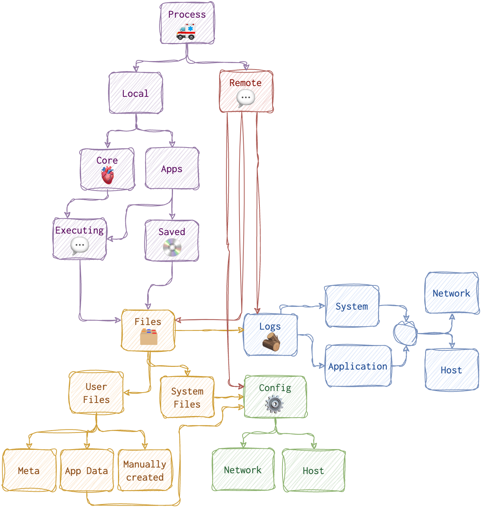
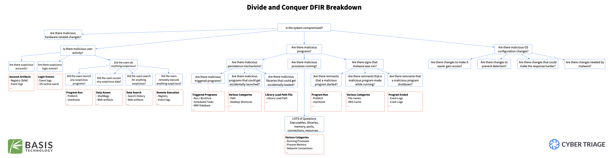
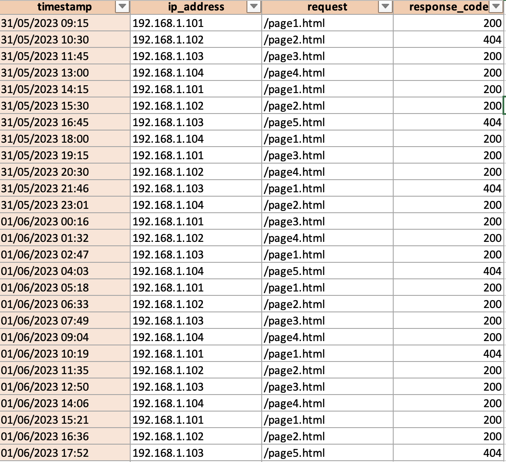
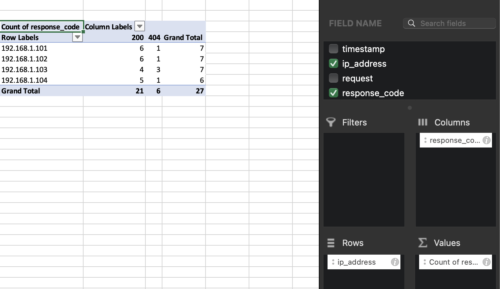
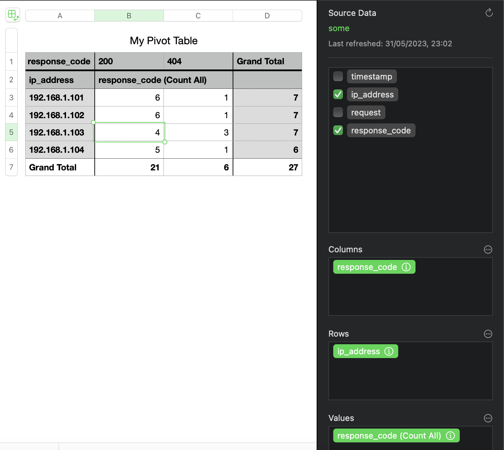
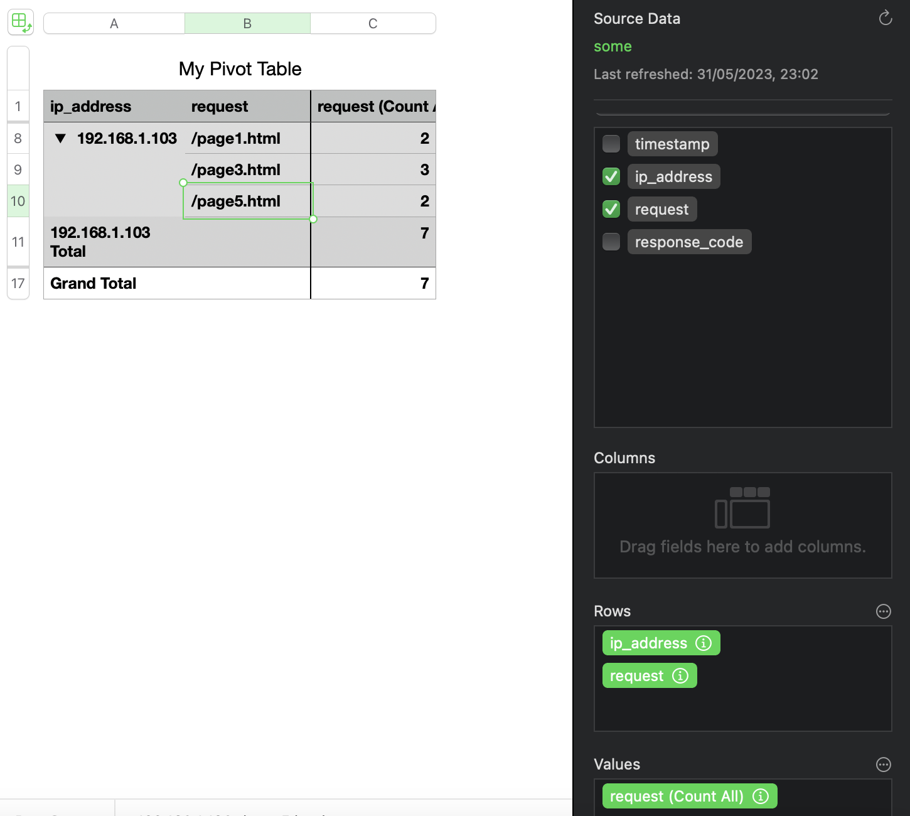
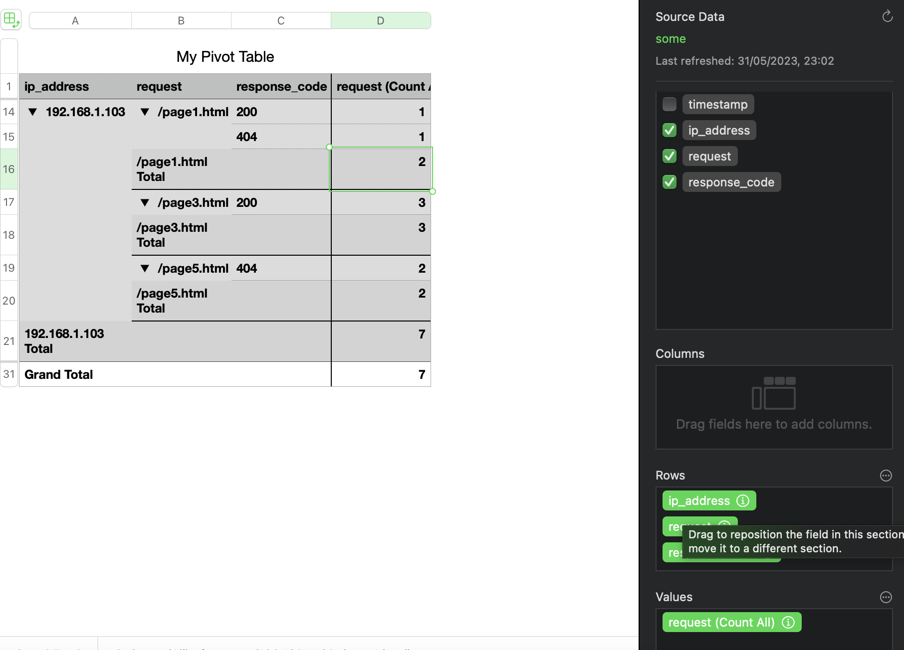

One can detect something automatically or look for it. So, the investigation (incident response and digital forensics) can either start from a security alert or threat-hunting. What are artefacts, and how are they different from evidence? What types of artefacts are there, and how to look them out? Let’s dive deeper into what techniques are used to spot the attacker.
Everything happening on the computer 🖥️ or a mobile device 📱 (a little computer itself) is driven by a process. Which one? This is what we are answering during our investigation. Like when we say that everything is made of atoms or a file on a PC - it’s a simplification, but it allows us to break the problem down into a manageable set of smaller problems.
When in the morning, while coffee ☕️ is still too hot to drink, you open your mail ✉️ client to see what’s new, you are running a mail process that allows you to do that. You see than an email about your project and the attachment. You then save it to disk (your mail process ✉️ does that), then open it with some text editor 📝 process. You then see a notification about an upcoming meeting (the calendar 📆 process sends it to you), you log in to some video conference tool (yet another process) and talk to your colleagues. Behind the scenes, your PC uses a microphone, video drivers, and processes. So, everything on a system is a file, while a process creates everything created. That’s why it is so difficult to prove intent - processes create traces, not the users directly. We know that behind every process is a user (legit or not) or a system (basically another process!).
Below is a roadmap diagram for the artefacts and how these are connected.

Let’s start from the top. As we have already discovered, any trace on the system is left by a process 🚑. Information can reside either on disk 💿 or in RAM 💬. Now, not always, and not all processes are in RAM 💬 and on disk 💿. The process can be found in RAM 💬 only when executing and a while after that.
What the process looks like when executing and residing on disk (image file, we call it) - are sometimes two different things (in the case of polymorphic files, packed or encrypted). That’s why I have marked the executed rectangle with RAM 💬 only.
Also, if the attacker attacks the environment, it’s another story. While gaining remote access through some vulnerability or misconfiguration, no artefact on disk might show that. However, if this processes changes configuration, if the activity is logged on the system, or if the process creates files, we will see some on-disk artefacts.

Now, let’s focus on the lower part of the image. When a process is running, it inevitably makes some changes. Technically speaking, configurations and logs are also considered files, so I have included them within the files section. However, given their distinct natures, they are visually distinguished by different colours.
Everything is created and modified by a process (unless the user takes a hammer 🔨 and smashes the computer 🖥️). And there are only two states for a process: saved on disk 💿 or executing (i.e. residing in RAM 💬). When executing, it intentionally or inadvertently creates, changes or deletes some files (including configs and logs). Whatever the process is doing, it goes through RAM first. So, until this memory space is overwritten, it might contain strings, files, and even other processes.
There are two process types: core 🫀 (preinstalled programs required for the OS to run) and other. So, it is reasonable to assume that the user never saves these core processes on disk; they are supposed to be there. The only way they are changing is through OS updates.
Artefacts vs Evidence
Now, what’s an artefact, and what’s the evidence? When something happens on the machine, it leaves a trace. There are different locations these traces can be found; they are called artefacts. Artefacts include Windows registry, macOS plist files, file metadata, logs, etc. I have dedicated the whole section to various artefacts, their specifics and analysis tips. Those artefacts might have information valuable for the investigation and that we call evidence. Some examples of evidence are paths to malicious executables in the registry, executable names and passed arguments in the logs, malicious scripts, some strings found in a file etc. One can think of artefacts as roads 🛣️ and evidence as footprints on those roads 👣 and 🐾. The road remains the same, but there are multiple footprints of different types, and some indicate malicious activity. However, it’s not always easy or possible to tell who left the footprint and whether or not it was forged.
Both legitimate users and attackers produce the evidence by intentionally or inadvertently altering the artefacts. Intentional altering of artefacts is complex and only sometimes possible. There are several ways the attacker can perform activity on a system; let’s see what these are.

The attacker needs to do his job. So, the attacker needs to use some tools, and whatever he or she uses will leave a trace. Even wiping the traces leaves some traces. Although finding those traces is only sometimes straightforward, it’s usually possible. There are two options for the attacker:
- Physical access. One can steal a laptop or use the unlocked machine while the employee is having lunch.
- Remote access. Most of the time, the attacker doesn’t have physical access and needs to do some research and crafting to get the “treasure”.
There are various ways to get initial access, and those techniques are well covered on the MITRE website. Once this access is acquired, the attacker has limited options to go forward with. One of them and frequently used by the attacker, is using some malware 🦠. Of course, he needs to deliver this malware to the system and run it. Running malware leaves traces 🐾. Sometimes (quite often), the attacker will try to use the legitimate tools already preinstalled on the target machine. And guess what? These tools also leave traces 👣! The trick here is to investigate WHO ran this tool 🤔.
Another option the attacker 🍒 has is social engineering vector, including various phishing attacks, tailgating etc. But eventually, this also comes to running something on a machine, be it a legit program or not so much.

Let’s imagine a legitimate ordinary user with no malicious intent or malware installed. What would their daily activity look like? Also, running some programs which, of course, leave some traces.
But how do we distinguish between a legitimate user 🥦 and an attacker 🍒? When we find malware, and we see its traces 🐾 on the system, it’s one story. But what if the attacker got remote access to the system and used a legit tool on the user’s 🥦 behalf? What if the attacker 🍒 has tricked the user 🥦 into running something evil? How do we know it’s 👣 and not 🐾? Sometimes we don’t.

🐾 Types of Evidence 👣
Circumstantial
Circumstantial evidence refers to the collection of facts that, when considered together, can be used to infer a conclusion about malicious activity or a person involved. This type of evidence does not directly prove the fact in question but allows for the possibility of drawing inferences to establish the fact indirectly. Circumstantial evidence is often used in digital forensics and incident investigations when direct evidence is not available. Let’s consider a scenario in which an organization suspects a data breach has occurred. They are trying to determine if an employee, John, is responsible for the breach. Direct evidence would be something like a security video showing John copying sensitive files onto a USB drive or an email sent by John admitting to the breach. Circumstantial evidence, on the other hand, would involve facts that indirectly suggest John’s involvement. For example: Log files showing that John’s user account accessed the sensitive files just before the data breach occurred. Records indicating that John’s computer was connected to a USB drive around the same time the files were accessed. The breached files were found on a dark web marketplace, and the seller’s account was linked to an email address similar to one John used for personal purposes. John had recently expressed dissatisfaction with the company and was looking for a new job. None of these individual facts directly prove that John is responsible for the data breach. However, when considered together, they create a strong circumstantial case suggesting John’s involvement in the malicious activity. ChatGPT
Incontrovertible
Incontrovertible evidence refers to evidence that is indisputable, irrefutable, or impossible to deny. It is so strong and compelling that it leaves no room for doubt or argument. In digital forensics, incontrovertible evidence may include things like unaltered log files, digital signatures, or cryptographic hashes that prove the integrity and authenticity of data. However, it is essential to note that it can be challenging to obtain incontrovertible evidence in digital forensics due to the potential for data manipulation or tampering.
Corroborating
Corroborating evidence is additional evidence that supports or confirms the initial evidence or a fact in question. Corroborating evidence helps to strengthen the overall case by providing independent confirmation of the facts or findings. In digital forensics, corroborating evidence may include things like additional log files from different systems, witness statements, or even physical evidence that supports the digital evidence. The use of corroborating evidence is particularly important in digital forensics because it can help to establish the reliability and credibility of the findings and minimize the chances of false positives or inaccurate conclusions.
🏺Common Activity Artefacts
Below is the list of the most common artefacts that could be used to determine user activity. Some of them are mobile specific.
I’ve devided them into two main groups: primary and secondary. Primary artefacts are those that are specifically designed to provide this information. For example, you can view contacts via address book or read SMS messages.
Secondary artefacts are like data lakes: they aggreagate lots sort of information that might or might not contain something relevant. In requires wits and analysis in order to retrieve something useful from there if anything is there. For example, to determine if a person knows another person, you could see their contact list (which is the easiest way). However, not all connections are added there. So, you’d probably refer to mailing activity as well. The last resort would be to see photos and videos in order to find a familiar face. There is small chance to also find this information in some notes. For example, “I met Julia Roberts yesterday on the tube! Imagine that!” Some artefacts are listed both under secondary and primary sections since for some purposes they might be secondary. For example, social media is basically a very sophisticated address book + messages system. However, there are feeds there as well and as with all messages in general you sometime find something relevant there. For instance, if you are not sure if the person did work this day and check their social media page where there was a photo from a bar posted at 2pm on Thursday (too early, ey!), you might be relatively sure that no, the person was no at work that time.
Secondary artefacts
- Notes
- Voice assistant’s logs
- Browser activity
- Photos, videos (local, online)
- Screen or voice recordings
- Calendar events
- Music
- Gaming
- Social media
Primary Artefacts
See all…
- 👥 Contacts and Connections
- 📖 Address book
- 💬 Messangers
- 💬 Social media
- SMS/MMS
- ☎️ Call history (video, phone)
- 🗺 Geo posisition
- Device IP
- Traffic (if logged)
- Social communications metadata
- Maps applications
- VPNs used (logs if any)
- Photos and videos
- Documents saved/downloaded/deleted/modified
- Calendar events
- Web browsing
- Screen or voice recordings
- Computer Activity
- System logs (logs, prefetch, events etc)
- Documents saved/downloaded/deleted/modified/renamed/copied
- Folders traversed
- USB and other external media attached
- Processes running/terminated/spawned
- Encryption/wiping software usage
- Shortcuts, symbolic links and links
- Configuration files (etc, plist, registry)
- Network connections opened/closed
Detection Types
Unless we protect a small company with 2-3 computers, we can’t afford to repeatedly spend days on a single machine to ensure everything is in order. And even if we had that much time, it could be more practical. In the ideal scenario, we would want to automatically detect as much as possible and then manually examine only systems that were likely compromised.
Unless the attacker has physical access to the machine, tricked the legit user into doing bad things or has some RDP or similar access due to misconfiguration, they need to run some process (usually malware) to hook and achieve their goals. So, there are three types of processes traces of which we need to look out for:
- 🥸 Active malware
- 😴 Dorman malware (will run eventually and become 🥸)
- 🤪 Living Off the Land (LOL)
I will use these emojis for detection and threat-hunting techniques suitable for this process type.
🖲️ Automated
We can leverage the following data to write and tune our threat-hunting rules:
- ✍🏻 Antivirus and signatures 🥸 and 😴
- 👣 IoCs 🥸 , 😴 and 🤪 (LOL is trickier)
- 🤨 Anomalies (Legit Automated Process and Malware) 🥸 and 😴
Now, these only sometimes work and fire. First, signatures are useless if it’s a new malware or a modified or polymorphic one. Besides, signature databases grow more extensive and are harder to manage. Besides, think about it, humans sometimes create signatures, and humans make mistakes. Even if you have some perfect Yara rule, it takes time to scan the system, and you can’t possibly have a perfect rule for every single malware out there. Besides, attackers do not always use malware; sometimes, they use what’s already on the system and is legit.
Secondly, there will be no IoC (Indicators of Compromise) if it’s a new campaign. Also, some IoCs become irrelevant very quickly. For example, it’s fairly easy for the attacker to change an IP address, domain name, file hash or name.
Anomalies are more reliable and long-living, but there is still a good chance of missing something that is not seen as an anomaly. For example, the attacker stole the admin creds and used the admin tools from the admin machine during working hours. What’s anomalous about that?
Pattern-based and behavioural deviations are good techniques to use here.
⛏️ Semi-automated and Manual Examination
We know some things about the attackers that are usually the same across different actors: they need to achieve their goals (usually, they are after the information), they need to stay persistent, and usually, they need to hop from one machine to another. We can assume the attacker would target specific locations and settings if they sneak through our detection mechanisms. The persistence techniques are limited, as are those for lateral movement.
- Persistence mechanisms. For example, checking a Windows machine’s
RunandRunOncekeys can sometimes reveal something suspicious. - Artefacts and logs collected across multiple machines.
- Timeline analysis
- RAM
Stacking and frequency analysis is very good approaches here.
🔬 Deeper Look
This only makes sense when we have a limited list of machines to examine. We could look at the same artefacts as in the previous step. Forensic acquisition and analysis are exactly what this step is about. RAM analysis is usually performed in this step (not always necessary or possible). We would check for filesystem metadata (like MFT on NTFS) and analyse unallocated or slack space. Of course, attackers want to avoid being easily found, so they employ evasion techniques. We would also look out for possible anti-detection and anti-forensics techniques.
This step is the best and sometimes the only bet for finding dormant 😴 malware and LOLs 🤪. Also, don’t forget that sometimes it’s as “simple” as an insider threat (not actually that simple), so, a deeper look to prove intent could be due.
Pattern-based analysis, behavioural analysis, stacking, frequency analysis, and finding evil are excellent techniques for this step.
Detection Techniques
Find Evil
One of them is called “Find Evil” 👿. For this method, you need to know a baseline. It helps to run some collection for a clean system to see the baseline for this OS/setup if you are unsure. Otherwise, looking at the data, you might notice something standing out, like a Windows core process spawned from the wrong direction or an HTTP traffic flowing back and forth from a java.exe. Another example: suddenly increased server requests could indicate nefarious activity. Again, you need to know the baseline to tell if something is wrong.
🛠 Typically, this kind of stuff (spikes) is picked up by the IDS/IPS/WAF systems quite neatly. 🗒 TODO: https://www.open-scap.org/security-policies/scap-security-guide/.
Known Good
Of course, to find evil, one needs to know what’s NOT. Only some of the files are worth considering. However, it takes a lot of work to keep all of them in mind. I’ve made several database files that contain information on files on a clean installed system. There will be some divisions, but I hope it will also help eliminate a massive pack of files.
When reviewing processes and artefacts for potential maliciousness, I use the following list, where items are ordered by their likelihood of being malicious.
- Outstanding
exeor batfilesnamed with one digit or letter likea.ps1,1.bat.a.exeetc. - Drivers that were installed recently or that I need to recognise.
- Unfamiliar program names (google or ask ChatGPT to know more about such programs)
- Familiar programs in unusual places
- Programs that seem legit are in the expected folders (last resort).
Behavioural Analysis
A little more sophisticated “Find Evil” technique is what I call behavioural analysis. For this method, you must think like an attacker and a regular user. For example, for everyday use, the failed login process would look something like the following:
- First login attempt - error
- Second login attempt - error
- Third login attempt - error
- Reset password
- Login
For a malicious user, it would be something like (brute-forcing):
- First login attempt - error
- Second login attempt - error
- N-login attempt - account blocked
- Sleep for N minutes
- M-login attempt - error
- etc
For a malicious user attempting password spraying attack (when one password is used for different accounts), you are likely to do something like the following:
- First login attempt - error
- Second login attempt - error
- Third login attempt - error
- Stop (no successful login or password reset)
Frequency Analysis
Another technique is called frequency analysis 📊. Depending on the system, you’d look for something more or less frequent. Covering all the cases is hard, but some examples may do the trick. For example, you have a web server. Most of the time, with regular traffic and no malicious activity, there would be 200 status codes returned by the server. However, if an attacker performs a brute force attack against user accounts or IDOR probing, you would see a spike in the 403 (access denied) HTTP status code. If the attacker were to perform some directory busting, you would probably see a point in 404.
🛠 SIEM/IDS + ML (machine learning engine) could help identify those “unusual things”. Some SIEM would allow making rules based on different log fields. So, for example, in the above scenario, one could create a rule to alert the CSIRT if a 100 threshold for 404 HTTP status code returned is hit in 1 minute.
Pattern-based Analysis
One more technique that I have been using I call pattern analysis. This one needs to be VERY knowledgeable about red teaming activities and current vulnerabilities. Refrain from overwhelming yourself with the openness and exploits out there, and filter the news and feeds only to show those relevant to your environment. For example, see only Apache Tomcat stuff, PHP and nginx + common web application vulnerabilities. Patterns for each vulnerability exploited would be different, of course. For example, for an SQLi, it’s something like a single quote (') or sleep keyword (also could indicate command-line injection) or some other pattern like 'or%201=1-- or anything from list and even more. You can find the list of payloads (designs) for common vulnerabilities online to get a general idea.
🛠 For post-incident analyses, I find it helpful to use Excel/Numbers due to their advanced pivoting and filtering functionality. It’s useful for both frequency and pattern analysis. This, however, will only work for offline analysis and only on data that’s not too overwhelming. If you are familiar with the querying language, SIEM tools can also be convenient for visualisation and filtering.
So, knowing the red team operations, possible attacks on your infrastructure, and standard user behaviour is helpful.
TTPs and ATT&CK MITRE
Cyber Analytics Repository - https://car.mitre.org/. That’s basically what I was planning to write here, but it’s already implemented and in a very neat way. Each tactic is described here, with a short description, categorisation, Splunk queries, and available tools. As I said, need.
Matrices are another way to categorise attackers’ tactics and techniques. It’s a table (enterprise and mobile). In these tables, attacking techniques are categorised by type and by attack stage. Clicking on any technique will bring you to its description, mitigation and detection tips.
What can I add to this? I don’t know right now. I am relieved that I don’t have to do it myself and, at the same time, disappointed I don’t get to research and analyse this information myself. I could add some examples from my own experience…., or additional tips… That’s some food 🍱 for thought. Here is a link to contribute. It looks like they are looking for more macOS and Cloud tactics, and since I am particularly interested in these, it might be my niche.
One additional thing I could do here is to develop a learning plan. And use it as a sketch to sort other content on this website accordingly.
The interesting part is that if you look at MITRE, you will notice that lateral movement and initial access both have the least number of techniques.

What does it mean? It means that you have more chances to tune the detection mechanisms for these stages and then deduce and validate the hypothesis for other stages.
Analysis Techniques
When we have a lot of data, we need to eliminate all the noise to make the above techniques easier to use. One way is to combine all the data of the same type from all the machines and apply the above techniques to the data set. Think of it as a huge database of data (SIEM, if you will). Another way is to use each artefact to pivot around it to look for other related artefacts.
Stacking
It’s not a distinct technique per se, but rather a method that helps identify leads to pursue. We gather data from multiple systems and utilize either of the aforementioned techniques to detect malicious activity. Typically, frequency analysis is the initial approach. Wondering why? Have you ever come across the law of large numbers (a concept from probability theory and statistics)? As the sample size increases, the sample mean or any other sample statistic approaches the true mean or parameter. To put it in simpler terms, as you collect more data from various machines, the average will converge towards the true average.
Let’s consider an example: we have 10 machines, with tool.exe installed on 6 of them and absent on the remaining 4. Is this a deviation? Now, let’s examine 100 machines. We observe that tool.exe is installed on 90 machines. Therefore, it could either be a legitimate tool or a major breach 😱. Consequently, when the dataset is small, it becomes more challenging to determine through frequency analysis if something is amiss. However, with a larger dataset, the discrepancies in frequency become more apparent.
Prioritise And Pivot
One single action on a system can leave multiple traces simultaneously. Furthermore, within a single campaign, several traces can be linked to the same activity. Often, systems are inundated with data, and not all of it is pertinent. Even when the data is valuable, it requires additional information to substantiate a claim. Using stacking and frequency analysis, we have inferred that two machines are likely compromised and possess noteworthy artefacts. The question then arises: How do we proceed? 🤔
That’s when pivoting comes into play. We use single evidence of some suspicious action and look for related evidence. For example, we have determined that some malicious.exe was launched from the command line. Let’s pivot around it to find new evidence. What we might want to know is if malicious.exe was injecting into another process or creating files. Let’s imagine that it created a child process malchild.exe. What did it do? It created a file open.docx. Oh, there is a template in the doc document with a link to a remote machine. What’s the domain name? What’s the IP? Ok, looks like we have exhausted this lead.
When we found malicious.exe, it was not the only lead we had. We also found a new user on the system - iamgood. What level of access did it have? What activity was performed by this user? It’s another lead, and now we are pivoting around iamgood user.
Here is another example of pivoting. Say, we know that the machine must contain a malicious downloader script. Stop looking for other malware and focus on that one. Once it’s found, using different other artefacts, answer the following questions.
- What happened before and after?
- What else is in the same folder?
- What does it do?
But what if we need to figure out where to start and what to look out for? For starters, the initial triage and stacking must give some clues. But if there is nothing at all, try a little speculation using the MITRE matrix. “But there are so many techniques there! Where to start?” - you might ask. Prioritise or brute force! Start with the CERTAINLY compromised machines, leaving those likely compromised for later.
Prioritise (Manual). It would be best if you always had an assumption about the evidence location. Although the attacker uses many different techniques, it’s not an endless list. Remember the MITRE matrix? Initial access and lateral movement have the least number of techniques. When you have a least of ideas, start prioritising by answering the following questions:
- Possible impact on the investigation result.
- The likelihood of finding anything.
- Could it be a false positive?
- How much time do you need to follow this lead?
Also, depending on the case, you’d look for different things in different locations. Here are several examples:
- Search videos and pictures if it’s a child exploitation case.
- If it’s a data exfiltration case, try starting with audit logs for the service that contains that data.
Brute force (Automated). Let tools and software find evidence. Just let it check the most likely evidence locations for anything suspicious. One of the tools capable of it is 🛠️ Cyber Triage.
Divide And Conquer
You can use the following roadmap to follow the divide-and-conquer approach.

Recursive. When you have a big and ambiguous problem, it always takes time to see where to start. The best approach here would be to recursively break a problem into minor issues until one becomes solvable. This helps us to come up with a list of questions to answer.
Artefact-driven. Now that you have the list of questions ❓, answer them with artefact ⛏️ categories.
def break_down(problem):
questions = break_down(problem)
return questions
def find_artefacts(question):
return artefacts
questions = break_down(problem)
for q in questions:
find_artefacts(question)
Pivot tables
One of the tools that might be useful for pivoting is Excel or Numbers, or any similar tool. You can create a pivot table when you have a large set of data of the same structure, for example, logs. Using a sample log file, I will show how this can be useful to spot something out of the ordinary in a large data set.
You can perform pivoting with other tools like the following:
- some dedicated framework
- LogParser
- Script
- SIEM (some of them)
I will show the process for smaller datasets with Numbers or Excel.
In Excel, choose Import -> csv from the menu. Choose your delimiter. If some columns are sticking together, use Data -> Text to Column to separate them with another delimiter. Select the table that contains the data and choose Data -> Summarise with Pivot table. Also, you can add filters to each column for further aid. On macOS using Numbers, open the csv and choose Pivot table on the top.
Imagine we have accesslogs.csv that contains HTTP logs to the server. Something like the following:

Creating a pivot table helps to answer questions like these:
- How many requests returned 200 status codes on average?
- Which IP address received the largest number of 404?
- Which page was the most frequently used?
And many more. Here is an example of a pivot table created in Excel. You can choose what data to use as columns, rows and values. Most of the time, by default, I guess, both Numbers and Excel suggest calculating the sum for the values. However, in this case, we don’t need to get the sum of status codes (that doesn’t make any sense). We better see the number (count). Just right-click the value in the Values section in settings and choose count instead of sum.

And here is what pivot tables look like in Numbers.

My table above clearly shows which IP addresses made the most requests and which IP address had the largest number of 404. Might this be an attacker brute-forcing or trying to exploit an IDOR? Hm… 🤔. Let’s filter by this IP and see the pages visited by 192.168.1.103. Here is a new pivot table:

Interesting. So, the attacker seemed to have a specific interest in page3.html. Let’s find out how many times this IP received a 200 or 404 response for that page.

As we can see, this IP (our presumed attacker) only received 200 when requesting this page). It seems like this was something other than a brute-force attempt. It’s a lame example, of course. I promise I will try to come up with something better in the future.
💡 Generate pivot tables each day during the month for statistical analysis. Later deviations might highlight suspicious traffic.
When reviewing this type of data, common sense is crucial. For example, it is unreasonable to expect a high volume of requests to your admin page from various IP addresses returning 404 or 500. However, it is expected for other pages to receive a significant number of requests. The predominant response code should also be 200, so a sudden increase in 404 responses could indicate a potential technical or security issue.
Another good way to quickly filter out the logs is the fzf utility. It works both on macOS and Linux. I don’t know about Windows, but you could always use WSL there. Here is a video of how one can dive into this utility and use it to speed up the search. Below is an example of how one can filter using a combination of jq and fzf tools (for json logs).
aws logs filter-log-events --log-group-name /something/anything --profile prodserver | jq -c '.events[]' | fzf --multi --cycle --reverse --preview-window=right:80%:wrap --preview 'cat {}'
Types of Users
Actually, as I read further and further, it seems that everything is about a user. But!
A user can be of several categories. I’ll name each one as short as I can to refer to them in future. But I will describe them in more detail below.
Legitimate user, who has done something bad by accident. Let’s call him a dummy 😬. I’ve been there, I once changed permissions to Deny for my admin account to disk C on Windows and could do nothing about it later. How stupid was it 🙈? My excuse is that I only started with PCs… .
Legitimate user, who has done something bad by intent. Let’s call this one a poopy 💩. Say, he or she feels highly underpaid and sells the company’s kitty plans to some evil dog hackers.
A user created and used by a hacker. This one I will call a sheep 🐑 as in A wolf in sheep’s clothing since the attacker is trying to mask itself as something good. This one is not unusual, but I guess, easily determined by the sysadmin. However, there are some cases, when an attacker can change view permissions for his/her account on AD so that no one will see this user.
A user created legitimately, but compromised by a hacker and doing something by intent. This one will be a donkey 🦓, as the attacker is using another account for his ride. I guess it’s the most common when the hackers are in the picture.
And here are the questions we will have to answer during investigations, that can help in distinguishing between these types.
Observations
- I’ve noticed that people who favour Linux and, for some reason, use either Windows or macOS prefer their dock at the left (mostly) side rather than at the bottom of the screen.